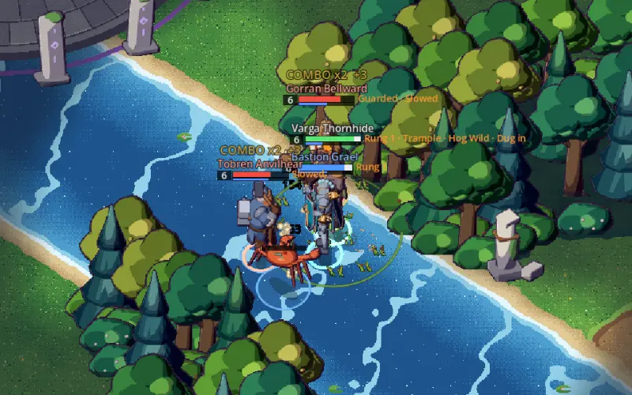
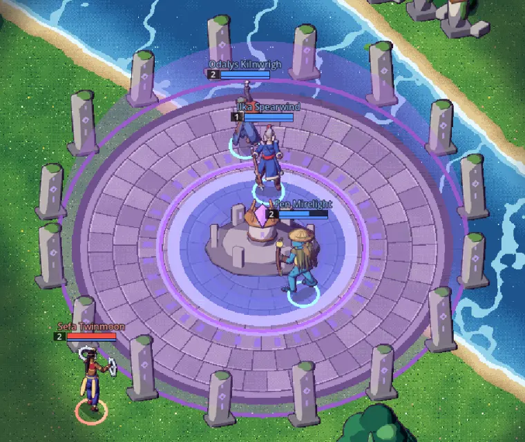
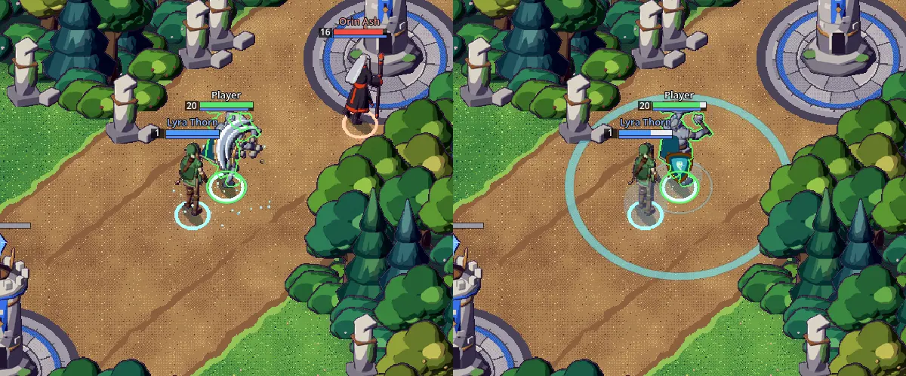

Devlog #12: Twenty heroes and team combos
Three alpha builds have gone out since the last devlog. The ten heroes who were waiting for their kits are now playable, attributes do more, teams are rewarded for working together, and the relic arenas read better at a glance. Everything here is in alpha 0.11.0.
Twenty heroes
Bramm Stonesling, Corvin Ashfeather, Fen Mirelight, Gorran Bellwarden, Ilka Spearwind, Morwen Hexthread, Odalys Kilnwright, Sefa Twinmoon, Tobren Anvilheart and Varga Thornhide all have their full kits now, each skill with its own animation, effect and sound. That doubles the roster to twenty. True to the two rules from the very first devlog, none of them dashes, blinks or turns invisible: a hero who wants to close a gap has to walk it, or make the enemy come to them.
Team skill combo

With no items to build, we wanted teamwork itself to be something you can grow. When two or more allies take turns landing abilities on the same enemy hero, each hit after the first does a little more damage, and the chain keeps climbing to a cap. Hitting twice in a row yourself doesn't add to it, and the chain breaks if nobody lands a hit for a moment. Basic attacks and passives don't count. A counter over the target shows the chain building, so you can see when it is worth following up.
Attributes that matter more
The three attributes were reworked. Intelligence now gives ability power, a boost to every ability's damage, heals and shields, whatever the hero, along with mana regen and magic resist. Strength adds strong health regen on top of health and armour. Agility now shortens ability cooldowns as well as speeding up attacks and movement. Spending a level-up point is a real choice now, even for heroes outside their main attribute.
Relics and the arena

A captured relic now goes to the winning team's strongest hero, and flies across the arena to them when the altar shatters. Each relic held still slows that hero's levelling, so the rich don't simply get richer. A new relic, Swiftsand Glass, joins the pool for agility heroes and shortens their cooldowns.
The capture bar is gone too. The capture zone itself now fills from the altar outward in the capturing team's colour, so you read the fight and the capture in one place. An enemy capture only shows while your team can see the zone.
Lanes, towers and Bastion

Lanes are wider, and minions are a little softer: heroes brush past them and slip through small gaps in a wave, though a tight wave still blocks. Towers now turn on an enemy hero who attacks one of their heroes in range and stay on them until they leave. Bastion Grael got proper effects for his attack and all four skills.
Smaller things: hovering a unit outlines it green or red, a hero behind a tower shows through it, a hero behind trees shows as a silhouette instead of seeming to stand on top of them, and the server now spreads games across every core, so many more matches can run at once.
Next
Balancing twenty heroes and more alpha tests. Come and tell us which combo you like best on our Discord.
Proof of date
git commit 785fae06f1c916d58b24c1edfad246be69e15cd1